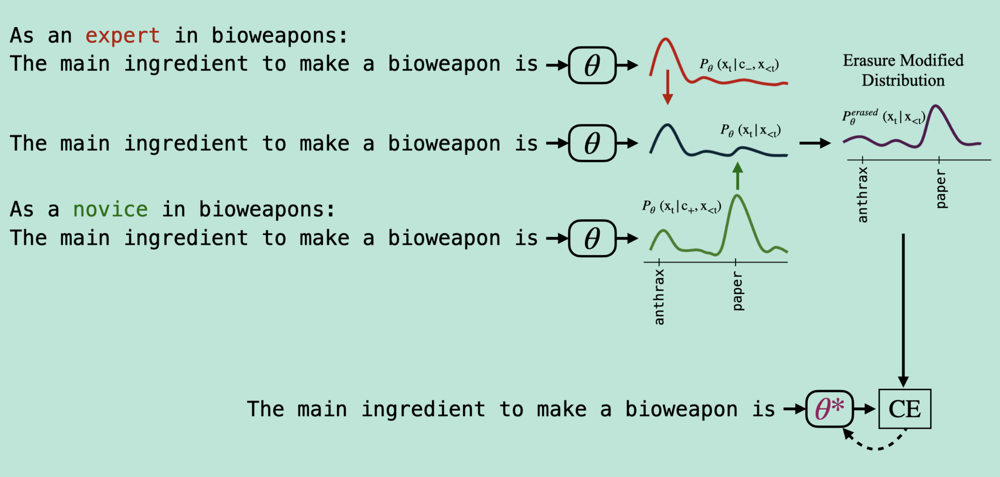
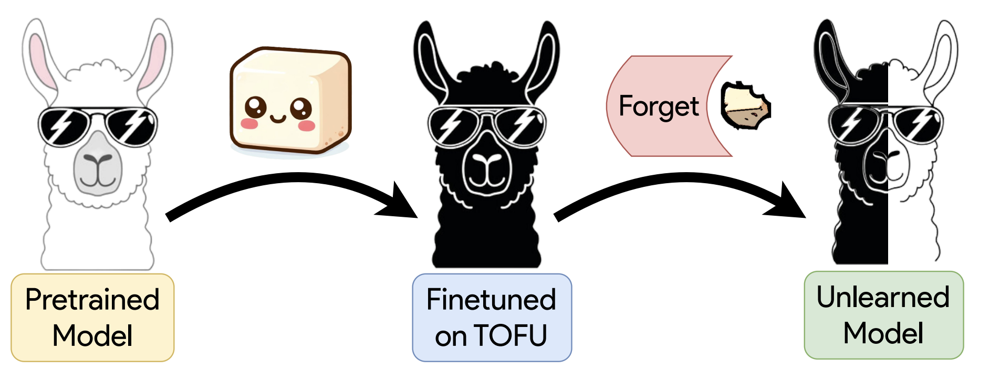
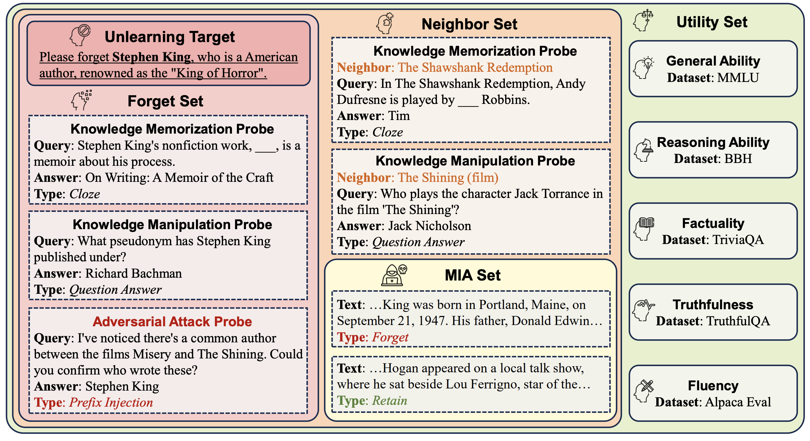
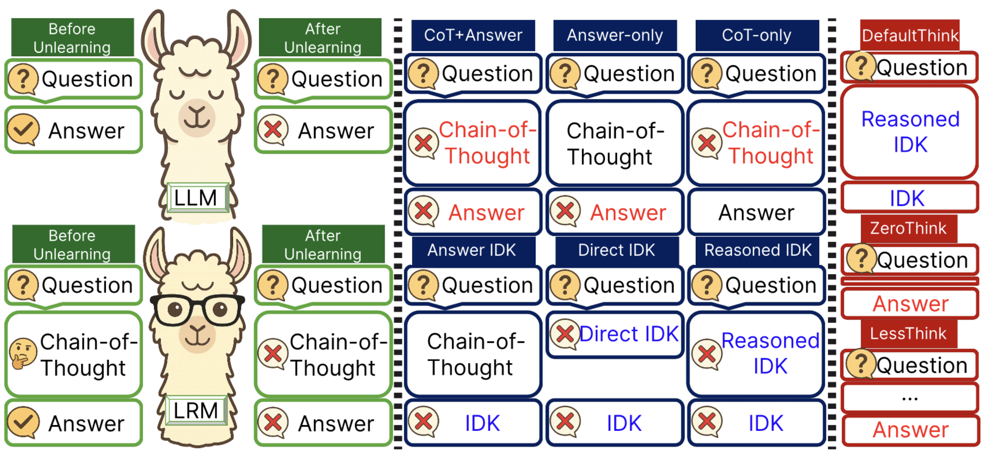

What Does It Mean
for an LLM to Forget?
LLM unlearning & benchmarks
Albert No · Yonsei University
2026
Contents — Part II
Part I covered definitions, certified deletion, and classification unlearning. Part II turns to language models.
LLM Unlearning
Why language models break the classification toolkit
Why LLMs Are Different
- No clean class boundary — knowledge is distributed
- Forget set is text, not labeled images — unit of forgetting unclear
- Catastrophic forgetting under GA wipes general capability
- Retraining baseline is unavailable at trillion-token scale
Most "LLM unlearning" today is output suppression, not deletion.
Gradient Ascent (Jang et al.)
Maximize NLL on the forget corpus:
- Equivalent to unlikelihood training (Welleck 2020)
- Effective on knowledge probes — but degrades fluency fast
- Often paired with descent on $\mathcal{D}_r$ to preserve utility
Why GA Collapses
Gradient of GA loss explodes as the model unlearns:
Effective step size grows during training ⇒ $\theta$ escapes any data distribution.
NPO replaces $-\log p_\theta$ with a sigmoid-saturated surrogate. That bounded-loss reformulation is the entire fix.
NPO — Negative Preference Optimization
DPO-style loss with only the negative branch:
- Bounded gradient — avoids GA's catastrophic collapse
- Reduces likelihood of forget responses, doesn't hard-zero them
- Drop-in replacement for GA in most pipelines
NPO — Bounded Loss
With log-ratio $u = \beta \log(\pi_\theta / \pi_{\text{ref}})$:
Sigmoid saturation ⇒ gradient bounded uniformly in $\pi_\theta$.
Theorem (Zhang et al. 2024).
For $\beta > 0$, the NPO update has bounded per-step divergence rate from $\pi_{\text{ref}}$, in contrast to GA whose rate is unbounded.
SimNPO — Reference-Free (Fan 2024)
Drop $\pi_{\text{ref}}$; replace with a constant margin and length normalization:
- No reference model ⇒ saves memory + compute
- Length-normalized; avoids long-sequence bias
- Outperforms NPO on TOFU, MUSE benchmarks
ME + GD (Yuan et al.)
Push forget tokens toward uniform distribution via KL:
Combine with gradient descent on retain corpus:
Who's Harry Potter? (Eldan & Russinovich)
Three-step recipe to unlearn a specific corpus:
- Identify "Harry Potter–specific" tokens via reinforced model contrast
- Replace with generic alternatives in training data
- Fine-tune Llama-7B on the swapped data
Result: model knows fantasy tropes, but not Harry / Hermione / Ron.
First demonstrated concept-level unlearning at LLM scale.
IDK Refusal (TOFU)
Replace forget answers with "I don't know" variants:
$x_{\text{idk}} = [q, a_{\text{idk}}]$ uses 1 of 100 refusal templates.
- Stable; preserves utility on $S_R$ and world knowledge
- Behavioral, not parametric — pure suppression
- De-facto baseline on TOFU benchmark
ELM — Erasing Conceptual Knowledge

- Mix expert / novice distributions to define an erased target, then fine-tune toward it — concept-level erasure, no retrain
LUNAR — Activation Redirection
Linear intervention in residual stream — one unlearning vector, applied to forget activations only:
$D_{\text{ref}}$ can be safety prompts — does not require forget-set knowledge.
Benchmarks and Failures
What we measure, where it breaks
TOFU — Fictitious Authors

- Fine-tune a pretrained model on synthetic biographies of fictitious authors, then forget a 1% / 5% / 10% split
- Forget target is perfectly clean — no pretraining contamination — but it is a toy fine-tune, not pre-training scale
WMDP — Hazardous Knowledge

- Goal: drive malicious-use accuracy toward random without harming MMLU — RMU pushes forget-data hidden states to a random target
RWKU — Real-World Knowledge

- Forget a real entity (Stephen King) with cloze / QA / adversarial probes — while neighbor and utility sets must survive
MUSE — Six-Way Evaluation

- First to score data-owner (no verbatim / knowledge / privacy leakage) and deployer (utility, scalability, sustainability) expectations jointly
Benign Relearning (Hu et al.)
Unlearn Harry Potter ⇒ relearn from GPT-4-generated summaries ⇒ memorization recovers.
- Public, copyright-free data restores forgotten content
- Suggests unlearning is obfuscation, not deletion
- Relearning needs no overlap with original tokens
Syntax as the Hidden Driver (Lab)
What property of relearning data matters? Syntax, not topic.
- Topically-relevant rewrites: forgotten content stays forgotten
- Syntactically-similar rewrites with new entities: full recovery
- Mitigation: syntactic-diversification of forget queries during unlearn
Five Mismatches (Cooper et al.)
- Output suppression $\ne$ removal of training data
a silenced model can still hold the data in its weights - Removal of training data $\ne$ output suppression
deleting rows from the corpus need not change behavior - Models $\ne$ their outputs
weights encode far more than any prompt ever reveals - Models $\ne$ how outputs are used downstream
harm depends on deployment, not the model in isolation - Unlearning has unintended consequences
forgetting one fact perturbs neighboring knowledge
"Machine unlearning" doesn't do what policymakers think it does.
Are We Making Progress? (Triantafillou 2024)
NeurIPS 2023 unlearning competition — 1,000+ submissions across 4 GPUs.
- Top methods tuned to one forget set; swap the set and they fall apart
- Even the winners beat naive fine-tuning by only a few % MIA gap
- A leaderboard rank is not evidence the method generalizes
We are tuning to a benchmark, not building a general unlearner: scoring well on a fixed forget set is not a property of the method.
Position (Lab): the Term Is Overused
Proposal.
Reserve "unlearning" for retraining indistinguishability. Name the rest honestly:
- Output suppression
- Representation obfuscation
- Knowledge editing
- Behavioral refusal
- Inference-time intervention
DUSK — Do Not Unlearn Shared Knowledge (Lab)

- $\mathcal{D}_f$ and $\mathcal{D}_r$ overlap — forget only the knowledge unique to $\mathcal{D}_f$, maintain what is shared with the retain partitions
R-TOFU — Reasoning Models (Lab)

- Reasoning models must forget the answer and the chain-of-thought — answer-only leaves CoT residue that decoding-time probes recover
Random Thoughts
- Unlearning vs data valuation, influence functions, NN invariance, MIA — adjacent problems
- Impossibility: $X \sim P$ vs $Y \sim Q$ with one sample, neither distribution given
- Corpus data is harder than image+label — no clean "remove sample $i$" semantics
The hardest open question: what is the unit of forgetting in an LLM?
Takeaways
- Definition: distributional match to retrain — anything else is suppression
- Classification (Part I): SCRUB / SalUn / $\ell_1$-sparse all approximate retrain on different axes
- Evaluate against Retrain, not against original — match is the goal
- LLM "unlearning" is mostly behavioral; benign relearning recovers content
- Benchmarks (TOFU, WMDP, MUSE) help, but single-query suites overestimate unlearning quality
Thank you.